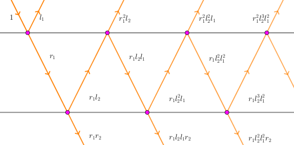
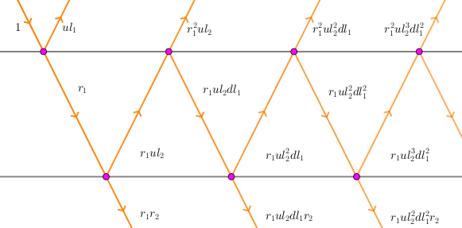

当一束光打到一层玻璃上时，有一定比例的光会穿过这层玻璃，一定比例的光会被反射回去，剩下的光被玻璃吸收。
设对于任意 $x$，有 $a_i \% \cdot x$ 单位的光会穿过它，有 $b_i \% \cdot x$ 的会被反射回去。
现在 $n$ 层玻璃叠在一起，有 $1$ 单位的光打到第 $1$ 层玻璃上，那么有多少单位的光能穿过所有 $n$ 层玻璃呢？
第一行包含一个正整数 $n$，表示玻璃层数。
接下来 $n$ 行，每行两个非负整数 $a_i, b_i$，表示第 $i$ 层玻璃的透光率和反射率。
输出一行一个整数，表示穿透所有玻璃的光对 $10^9 + 7$ 取模的结果。保证答案及中间结果不会出现分母为 $10^9 + 7$ 的倍数的情况。
类似等效作用力的思想，我们尝试将若干块 (连续的) 玻璃合并，找到代表它们的 "等效玻璃"。
先考虑将两块玻璃合并。设它们的透光率分别为 $r_1, r_2$，反射率分别为 $l_1, l_2$。则由下图：
由等比级数的知识可以得到，新的 "等效玻璃" 的 "透光率" 为 $r_1 r_2 + r_1 l_2 l_1 r_2 + r_1 l_2^2 l_1^2 r_2 + \cdots = \dfrac {r_1 r_2} {1 - l_1 l_2}$。
新的 "等效玻璃" 的 "反射率" 为 $l_1 + r_1^2 l_2 + r_1^2 l_2^2 l_1 + r_1^2 l_2^3 l_1^2 + \cdots = l_1 + \dfrac {r_1^2 l_2} {1 - l_1 l_2}$。
细心的同学已经发现了，两块玻璃的 "等效玻璃" 的 "反射率" 关于两块玻璃的参数是不对称的！
也就是说，对于玻璃 $a, b$，$a b$ 的反射率不等于 $b a$ 的反射率！
换句话说，如果你这束光从第二块玻璃底部射入，则反射率不再等于这个值，它将等于 $l_2 + \dfrac {r_2^2 l_1} {1 - l_1 l_2}$。而透光率还是相同的。
这启发我们，要将两块玻璃合并，只记一面的反射率是不够的，需要记上下双面的反射率。以下将一块玻璃 $i$ 的透光率、上反射率 (即光从顶部射入的反射率) 和下反射率 (即光从底部射入的反射率) 分别记为 $r_i, ul_i, dl_i$。
还是考虑将两块玻璃合并，此时就有：
新的玻璃的双面透光率为 $r = \dfrac {r_1 r_2} {1 - dl_1 ul_2}$，上反射率为 $ul = ul_1 + \dfrac {r_1^2 ul_2} {1 - dl_1 ul_2}$，下反射率为 $dl = dl_2 + \dfrac {r_2^2 dl_1} {1 - dl_1 ul_2}$。
这样一来，这个式子已经具有对称性，顺便也说明了两块玻璃合并的双面透光率是相同的。
于是，我们可以令玻璃合并运算 $\left( r_1, ul_1, dl_1 \right) \circ \left( r_2, ul_2, dl_2 \right) = \left( \dfrac {r_1 r_2} {1 - dl_1 ul_2}, ul_1 + \dfrac {r_1^2 ul_2} {1 - dl_1 ul_2}, dl_2 + \dfrac {r_2^2 dl_1} {1 - dl_1 ul_2} \right)$。则可以验证，对于玻璃 $a, b, c$，有 $\left( a \circ b \right) \circ c = a \circ \left( b \circ c \right)$，即玻璃合并已经具有了结合律，这和我们通常的认知相同。
(ps: 注意玻璃合并不具有交换律，$a \circ b$ 一般不等于 $b \circ a$，但它们的关系就是上反射率和下反射率互相交换了一下)
那么对于原题来说，初始的玻璃就是 $\left( a_i, b_i, b_i \right)$，我们只需要将这 $n$ 块玻璃合并，即求出 $a_1 \circ a_2 \circ \cdots \circ a_n$，那么它的反射率就是答案啦。
时间复杂度为 $O \left( n \right)$ 或 $O \left( n \log mod \right)$。
#include <bits/stdc++.h>
typedef long long ll;
const int mod = 1000000007, inv = 570000004;
ll PowerMod(ll a, int n, ll c = 1) {for (; n; n >>= 1, a = a * a % mod) if (n & 1) c = c * a % mod; return c;}
struct glass {
int fr, ufl, dfl;
glass (int fraction = 1, int up_reflection = 0, int down_reflection = 0) : fr(fraction), ufl(up_reflection), dfl(down_reflection) {}
inline void read() {scanf("%d%d", &fr, &ufl), fr = (ll)fr * inv % mod, dfl = ufl = (ll)ufl * inv % mod;}
inline glass operator + (const glass &B) {
ll iv = PowerMod((1 - (ll)dfl * B.ufl) % mod, mod - 2);
return glass((ll)fr * B.fr % mod * iv % mod, (ufl + (ll)fr * fr % mod * B.ufl % mod * iv) % mod, (B.dfl + (ll)B.fr * B.fr % mod * dfl % mod * iv) % mod);
}
} a, b;
int main() {
int n;
for (scanf("%d", &n); n; --n) b.read(), a = a + b;
printf("%d\n", a.fr + (a.fr >> 31 & mod));
return 0;
}
坑1：要注意若干块玻璃合并后的 "等效玻璃" 的双面反射率是不一定相同的 (只要推过式子就能发现)，因此需要将上反射率和下反射率都记下来。特殊地，如果你是只从上往下合并，可以发现，上面玻璃的 "上反射率" 不需要记录，只需要记录 "下反射率"。
坑2：还有一种通过 DP + Gauss 消元的方法，常数会略微小一点。(不过并不能解决逆元不存在的问题。不过至于逆元是否存在，你就像这道题一样假装逆元一定存在就可以了...)
不知道你们有没有发现，其实这里玻璃的合并和这道题中的线段树节点的合并有着异曲同工之妙。
这道题还有一种基于 Gauss 消元的做法，当然由于玻璃数较大无法 $O \left( n^3 \right)$ 通过，不过由于每个方程只有三项，因此可以通过 DP 方程的系数 (一次函数) 的方法来做到 $O \left( n \right)$。